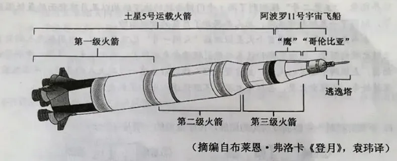
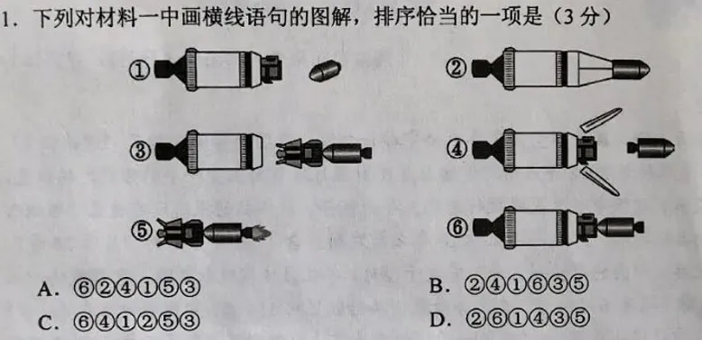

练习 · 非连续文本阅读
登月与月背探索
比较登月叙事、探测报道与推荐序中的科学信息。
导读
文体与题材：三则材料分别为登月科普叙事、月背任务报道和航天科普书推荐序。
作者与出处：材料一摘编自布莱恩·弗洛卡《登月》（袁玮译），材料二摘译自斯蒂芬·克拉克《中国计划在2020年前登上月球背面》，材料三摘编自吴伟仁《〈月背征途〉推荐序》。三则材料选入2024年高考语文新课标Ⅱ卷第1—5题。
内容脉络：材料一按发射、交会对接、着陆的时间顺序叙述阿波罗11号；材料二介绍嫦娥四号计划及此前探测；材料三回顾月背着陆的成就并寄语读者。
内容主旨：材料展示人类探索月球的阶段性进展，以及中国航天人在国际合作和自主探索中的贡献。
阅读重点：核查航天器部件的功能、任务发生时间与材料文体；区分科学事实和作者的评价、期望。
原文
原文按结构分节；随文内容可定位至对应段落。
材料一·登月过程·发射：土星5号升空，各级火箭依次工作。
①土星5号火箭升空了!它一点一点上升，庞大的身躯稳健有力。阿姆斯特朗、柯林斯和奥尔德林被巨大的推力紧紧摁在座位上。火箭在他们身下持续上升，各级火箭按照预定程序点火，第一级火箭、逃逸塔、第二级火箭一一分离。绕地球轨道飞行一周后，宇航员检查了火箭和飞船状况。第三级火箭再次点火，把飞船推向更远的高空。

材料一·登月过程·对接：哥伦比亚号与鹰号连接后继续飞行。
②当地球被甩到身后，就是船箭分离的时候：第三级火箭前端打开，哥伦比亚号从顶端弹出。鹰号(登月舱)在火箭顶端继续待命，这艘小飞船外形奇特，像一只缩着的蜘蛛。哥伦比亚号的驾驶员柯林斯，让飞船慢慢转身，“哥伦比亚”与“鹰”对接成功。宇航员告别土星5号的最后一级火箭，乘坐合成一体的两艘小飞船继续飞行。
材料一·登月过程·抵达：两名宇航员驾驶鹰号接近月面。
③终于抵达月球上空。阿姆斯特朗和奥尔德林驾驶鹰号离开，向着月球越飞越近。柯林斯驾驶着哥伦比亚号孤独地环绕月球飞行。此时此刻，那些远在地球上的人，不管是朋友还是陌生人，都时刻关注着、期待着……
材料一·登月过程·应变：着陆区错过，宇航员继续寻找安全地点。
④预定着陆区在哪儿？宇航员们全力搜寻。但是意外忽然发生：当他们发现着陆区，鹰号已经飞过了头！数英里一闪而过，舷窗外的月球变得崎岖不平。家园远在万里之外更无法奢望什么援手。此时此刻，他们能做的，只有保持镇定，平稳驾驶，继续飞行。
材料一·登月过程·着陆：鹰号平稳落地，地球上的人欢呼。
⑤看到了，就在不远处，那里平整而干净！鹰号慢慢减速、缓缓下降。登月舱越来越低、越来越低……直到平稳落地!此时此刻，在遥远的地球，人们鸦雀无声、屏息聆听。一个声音从遥远的太空传来，那是阿姆斯特朗从月球发出的声音:“这里是静海基地，‘鹰’着陆成功。”他异常平静，地球上的人们却爆发出欢呼的声音。随后，阿姆斯特朗和奥尔德林沿着舷梯爬下登月舱。陌生、寂静、壮丽的月球从此有了生命。
（摘编自布莱恩·弗洛卡《登月》，袁玮译）
材料二·嫦娥四号任务·计划：中继卫星、月背软着陆与国际合作。
⑥今年6月，联合国外层空间事务办公室举行会议，中国科学家介绍了“嫦娥四号”探月任务，表示将于2018年底前将中继卫星发射至月球背面上空一个引力稳定的位置，即地-月 L2点，这颗中继卫星将执行为期三年的任务。新华社的报道没有透露“嫦娥四号”发射的具体时间，只是说将在2020年之前发射。自1976年苏联的“月球24号”抵达月球之后，中国的“嫦娥三号”首次于2013年在月球实现软着陆。它搭载的“玉兔一号”月球车共有6个轮子，在任务结束前共行驶了约114米。中国科学家在《科学》杂志上发表的研究结果显示，“玉兔一号”的探地雷达探测到其着陆点下方有9个明显不同的地下层，表明该地区有着复杂的地质史，这与“阿波罗号”宇航员探索地区的情况有所不同。根据今年6月在联合国会议上发布的信息，“嫦娥四号”任务的主要工程目标包括进行月球背面着陆和深空数据中继。中国方面已邀请国际社会围绕“嫦娥四号”探月任务建立合作关系。
（摘译自斯蒂芬·克拉克《中国计划在2020年前登上月球背面》，2015年9月22日，英国“当今天文学”网）
材料三·月背征途·背景：月背难见与嫦娥四号历史性软着陆。
⑦从古至今，人类举头望月，传颂动人神话，谱写优美诗篇，却很少有人意识到，亿万年来，月亮的“图案”从未变化。地球引力使月球绕地球一圈的公转周期完全等于月球自转周期，所以人们只能看到它固定朝向地球的一面，我们把月球背向地球的一面称为“月背”。2019年1月11日，在北京航天飞行控制中心大厅里，科技人员见证了“嫦娥四号”和“玉兔二号”顺利完成“两器互拍”，这标志着“嫦娥四号”任务取得圆满成功，我国成为世界上首个成功实施在月球背面软着陆并巡视探测的国家。人类开启了探索月球背面的新纪元！
材料三·月背征途·成果：玉兔二号巡视及月背科学探测。
⑧这是一次前无古人的科学探险。月背探测是中国航天的首个世界第一，它具有巨大的科学和工程意义，是人类航天史上的重大突破。“玉兔二号”凝聚着中国航天人的勇气和智慧，像一位孤胆英雄，面对未知的风险与挑战，勇敢进发，努力探索。得益于驾驶员团队的悉心照料与陪伴,“玉兔二号”已经创造了人类月面巡视器生存时间最长的世界纪录。“玉兔二号”探测到了冯·卡门撞击坑的地下结构以及月球背面的最低温度等，取得了一系列科学成果，为人类揭开了月背的神秘面纱。
材料三·月背征途·寄语：推荐读者以好奇心继续探索深空。
⑨本书完稿之际，我国首个火星探测器“天问一号”已飞离地球，中国航天人的目光又随之投向深空。我由衷期盼这本书能引领读者走近探月、走近航天，滋润心中科学的幼苗，点燃胸中追梦的火焰，更希望年轻人能够沿着这一代航天人的足迹，不惧孤寂，保持好奇，去探索火星，去探索木星，不断追逐心中的星辰大海。
（摘编自吴伟仁《〈月背征途〉推荐序》）
第1题 · 图文排序
下列对材料一中画横线语句的图解，排序恰当的一项是（）（3分）

A．⑥②④①⑤③
B．②④①⑥③⑤
C．⑥④①②⑤③
D．②⑥①④③⑤
参考答案1展开 / 收起
参考作答
B。图示次序为②④①⑥③⑤。
审题与考查点
本题要求把画线段中的过程转成图示次序。取证范围是材料一船箭分离与对接的整段；结构图用于辨认部件，六幅图用于判断状态变化。首先要分清哥伦比亚号、鹰号和第三级火箭，随后依据各动作的先后关系排序。
文本分析
A项查看证据 ↗
图⑥中哥伦比亚号已经转向并与鹰号对接，图④才是哥伦比亚号从第三级火箭前端弹出，图①显示转身。A项以⑥开始，随后才列尚未打开前端的②，将对接放在弹出、转身之前；末尾又把⑤独立飞行排在③脱离火箭之前，均与画线语句不合。
B项查看证据 ↗
六图均对应第三级火箭附近的船箭分离与对接过程。②是前端尚未打开的初始状态，④是前端打开、哥伦比亚号弹出，①是哥伦比亚号转身，⑥是它与仍留在火箭前端的鹰号对接，③是两船合体离开末级火箭，⑤是合体后独立继续飞行。因此次序为②④①⑥③⑤。材料一前段的各级火箭分离交代此前过程，不能把图②解释为第一级或第二级火箭分离。
C项查看证据 ↗
C项把已对接的⑥放在弹出④和转身①之前，又把前端尚未打开的②排在转身之后；末尾⑤继续飞行早于③离开末级火箭，也颠倒了过程。判断依据是画线段中的弹出、转身、对接、告别末级火箭、继续飞行及各图所示状态。前段各级火箭分离只提供任务背景，不是图②的直接所指。
D项查看证据 ↗
D项由②直接进入⑥，意味着哥伦比亚号未先弹出④、转身①就完成对接；随后又把转身①放在弹出④之前。画线段明确先弹出，再转身，继而与鹰号对接，所以该排序不成立。
知识点
图文转换需建立文字动作与图示状态的对应。动作次序由对象的位置、朝向和连接关系共同限定：先脱离才能转身，方向合适才能对接，对接之后才能合体离开。相关研习：信息提取与整合、文本证据与阅读推论。
解题方法
先利用结构图识别各部件，再给六幅图写出“未开、弹出、转身、对接、离开、飞行”的状态标签；沿画线段逐个核对。用“④必须在①之前、①必须在⑥之前、③必须在⑤之前”等约束复查，得到②④①⑥③⑤。
易误辨析
图②呈现第三级火箭前端未打开，不能按前文“第一级火箭、逃逸塔、第二级火箭一一分离”把它误读成初期火箭分离；图③和⑤都含合体飞船，但前者仍与刚离开的火箭同框，后者已经独立飞行，次序不可颠倒。
答案组织与检核
核对六个编号各出现一次，所有相邻状态能够衔接；明确②对应未打开的前端、⑤对应离开火箭后的飞行。答案写B，并可用完整次序核验。
第2题 · 内容理解
下列对材料相关内容的理解和分析，不正确的一项是（）（3分）
A．土星5号“体型”庞大，因为它需要把逃逸塔和登月舱送入月球轨道，不过在飞行途中它会不断地分离，以减轻自重。
B．鹰号的着陆过程并不顺利，飞船飞过了预定着陆区，前方情况不明，但是两位宇航员镇定、冷静地解决了突发问题。
C．2013年，“嫦娥三号”搭载“玉兔一号”在月球安全着陆，这为我国探月工程后续任务的实施打下了良好的基础。
D．“玉兔二号”在月球的生存时间已经超过了“玉兔一号”，它探测到了全新的科学数据，为人类揭开了月背的神秘面纱。
参考答案2展开 / 收起
参考作答
A。逃逸塔在绕地球轨道飞行前已经分离，未被送入月球轨道。
审题与考查点
题干要求选“不正确”的一项。四项分别涉及运送对象与分离时间、突发事件的处理、早期探测对后续任务的意义、巡视器生存时间与科学成果。每项含多个判断，应分别核对，不能因其中一句与原文相同就认定整项正确。
文本分析
A项查看证据 ↗
A项前半句把逃逸塔列为送入月球轨道的对象。材料一先叙第一级火箭、逃逸塔、第二级火箭分离，随后才写绕地球飞行及第三级火箭再次点火，说明逃逸塔此前已被抛离；后来向月球飞行的是哥伦比亚号与鹰号。即使减轻自重的理解成立，也不能使错误的运送对象成立，故本项不正确。
B项查看证据 ↗
B项的三个判断各有依据：飞过预定着陆区表明着陆遇到意外；舷窗外崎岖不平、家园遥远说明需要继续选择安全地点；保持镇定、平稳驾驶以及后来平稳落地表明宇航员处理了险情。因此选项对事件与应对过程的概括符合材料。
C项查看证据 ↗
C项的着陆时间、航天器与月球车关系可由材料二直接确认。软着陆、月面行驶和探地雷达取得地下结构信息，表明此前任务已积累月面探测的工程实践与科学认识，据此可以推断它为后续探月提供基础。后半句属于基于这些成果的合理推论；仅把2013年成功与后来嫦娥四号成功相接，不能单凭先后顺序证明因果。
D项查看证据 ↗
D项的生存时间比较应以“人类月面巡视器生存时间最长的世界纪录”为依据：这一范围包含此前的玉兔一号，因而支持玉兔二号超过玉兔一号的判断。冯·卡门撞击坑地下结构、月背最低温度等新探测成果支持后半句。玉兔一号行驶约114米说的是距离，不能用来直接推算其生存时长。
知识点
信息核对须保持对象、时间、数量范围与因果强度。材料直接说出的事实和依据事实作出的推论应分开；生存时间与行驶距离属于不同量，不能互换。相关研习：信息转述与判断范围、因果推理。
解题方法
把各项拆成可核对的小判断，圈出逃逸塔、2013年、超过、全新等关键词。分别回到材料一的分离次序、材料二的早期成果、材料三的纪录与发现。对推论补出事实依据，并检查有没有把时间先后或行驶距离当作充分理由。
易误辨析
“玉兔一号行驶约114米”不能推出其生存时间短；“后来任务成功”也不能单独证明早期任务奠基。前者应回到最长生存纪录，后者应回到早期软着陆、巡视和探测本身积累的经验。选项A的关键错误是运送对象，不是所有关于火箭体型和卸载的表述。
答案组织与检核
确认题干问“不正确”，结论为A。解析应指出逃逸塔已经分离；核对其余三项均有事实或有限推论支持，并避免把C项合理推论说成原文明示。
第3题 · 材料评价
下列对材料相关内容的分析和评价，正确的一项是（）（3分）
A．材料一中“此时此刻，那些远在地球上的人……期待着”“此时此刻……人们鸦雀无声”等语句，烘托了登月舱即将着陆时的紧张气氛。
B．材料二引用我国学者在《科学》杂志上的研究成果，将“玉兔一号”和“阿波罗号”的探测结果进行比对，然后对后者提出质疑。
C．材料三使用“世界上首个”“首个世界第一”等词语，表明“嫦娥四号”探测器取得不凡成就，也表现了驾驶员团队获得成功后激动的心情。
D．从材料一的成功登陆月面，到材料二“探测到……不同的地下层”，再到材料三的月背征途，可以看出人类在不断地对未知事物进行探索。
参考答案3展开 / 收起
参考作答
D。三则材料共同呈现人类持续探索未知领域的过程。
审题与考查点
题干要求选“正确”的一项，考查时点、比较态度、情感主体与跨材料概括。A项要核对两处“此时此刻”的前后事件；B项要区分不同结果与质疑；C项要辨明谁在评价、谁在工作；D项要分别找到三则材料对探索进展的支持。
文本分析
A项查看证据 ↗
第一次“此时此刻”连接鹰号向月球接近与地球上的关注、期待，尚不能确定为“即将着陆”的最后时刻；第二次则明确接在“直到平稳落地”之后，人们正在聆听传回的消息。选项把两处统一解释为即将着陆时的紧张气氛，抹去了叙述时点的差异，所以不正确。
B项查看证据 ↗
材料二引用中国科学家的雷达研究，把两处探索地区的地下状况加以比较，结论是地区情况有所不同。不同地点出现不同结果可以相容，并不意味着阿波罗号的结果受到质疑。选项增添了“对后者提出质疑”的态度判断；引用者在报道中呈现比较本身并无不妥，不能把转述比较这一行为另判为错误。
C项查看证据 ↗
“世界上首个”“首个世界第一”是在评价我国探月任务的突破和历史意义，体现推荐序作者的赞许与自豪。关于驾驶员团队，原文只写其悉心照料与陪伴的工作事实，没有转述他们成功当时的情绪。选项把作者评价归给团队的即时感受，改变了情感主体，故不正确。
D项查看证据 ↗
材料一写人类成功着陆月面，材料二写玉兔一号探测出与阿波罗号探索地区不同的地下结构，材料三写月背软着陆和新的科学发现。三个阶段各自拓展了探测对象或认识范围，能够共同支持人类持续探索未知事物的概括，故本项正确。
知识点
叙述语句的功能受其所在时点约束，态度判断则须有明确的评价主体。跨材料结论需要各材料分别提供支持，不能用一个共同主题代替证据。相关研习：文本证据与阅读推论、多文本阅读。
解题方法
将四项各写成一个核心判断，再核对时点、态度、主体或范围。A项前后各读一句，B项读完研究结论，C项区分推荐序作者和驾驶员团队，D项为三则材料各找一项探索成果；最后检查唯一正确项是否获得完整支持。
易误辨析
结果不同不等于相互否定，赞颂成就也不等于记录执行者的即时情绪。A项尤其容易因都写地球人的关注而被判正确；两处原句在着陆过程中的位置不同，不能用相同的气氛标签覆盖这种差异。
答案组织与检核
确认题干问“正确”，结论为D。对A保留两个时点，对B不添加质疑态度，对C不转移情感主体，对D覆盖三则材料，四项判断方向应与答案一致。
第4题 · 文体功能
《〈月背征途〉推荐序》对读者了解这本书有哪些帮助？请根据材料三概括说明。（4分）
参考答案4展开 / 收起
参考作答
①解释书名：说明“月背”是月球背向地球的一面，帮助读者理解“月背征途”的对象。
②交代背景：介绍嫦娥四号月背探测成功，以及本书完稿时我国继续探索深空的进展。
③提示内容：介绍玉兔二号、驾驶员团队与月背探测成果，使读者了解本书的主要内容取向。
④说明价值与阅读意义：指出月背探测的科学和工程价值、在人类航天史上的意义，并期待本书激发读者的科学兴趣与探索精神。
审题与考查点
本题问推荐序怎样帮助读者了解“这本书”，取证限于材料三。回答应把序中的信息转化为读者得到的帮助，如理解题名、了解背景与内容、认识价值，不能只复述嫦娥四号的科技成就而不说明其导读功能。
文本分析
说明书名所指查看证据 ↗
材料三先把背向地球的一面界定为“月背”，再以玉兔二号的月背探测呈现这一对象。读者据此可以把书名“月背征途”理解为探索月球背面的科学历程；题名所指有明确的空间对象和探测活动，不能仅把它概括为泛泛的赏月。
提示阅读指向查看证据 ↗
末段直接以“这本书能引领读者”说明推荐目的，并将科学兴趣与年轻人的探索行动相联系。读者由此知道作者期待本书激发求知和探索精神；这是推荐序的阅读引导功能，不能据此编造正文的章节安排。
交代成书背景查看证据 ↗
材料三把嫦娥四号任务圆满成功与本书完稿时天问一号已经飞离地球联系起来，交代本书产生于我国探月取得突破并继续走向深空的背景。回答时应写这些明确事实，不能把“为了记录所有航天历史”当作作者明示的成书动机。
概括主要内容查看证据 ↗
材料三集中介绍月背着陆、玉兔二号巡视、驾驶员团队以及探测成果，使读者预先了解本书围绕中国探月的任务、人物与科学发现展开。这里概括的是序文提示的内容取向，不据此断定正文某一章必写哪一操作细节。
认识成果价值查看证据 ↗
“首个世界第一”“巨大的科学和工程意义”“人类航天史上的重大突破”评价了探测任务的价值。读者因此理解本书所记录事件为何值得关注；这一价值判断与末段激发科学兴趣的期待相互照应。
知识点
序言可以通过释题、交代背景、提示内容、评价价值和寄语读者发挥导读作用。具体功能须由本序实际写出的内容确定，不能套用“介绍作者”“说明写作方法”等本材料未提供的项目。相关研习：信息提取与整合、主观题作答。
解题方法
依次读材料三的释题、任务成果和末段寄语，为每部分写“读者因此能够了解什么”。再把重复信息归入题名、背景、内容、价值四类，用“帮助读者……，因为序中……”组织要点。
易误辨析
不能只写“介绍背景、概括内容、激发兴趣”而不指出何种背景、哪些内容和何种价值；也不能把序中出现的探测成果扩写成已经核读本书全部章节。书名“月背”的界定是本题独立而明确的帮助，不宜漏掉。
答案组织与检核
每一点均以读者获得的帮助为中心，题名、背景、内容和价值分别展开。保留“月背”含义与探测成果的具体信息；不编造分项分值，不把推荐序等同于全书正文。
第5题 · 跨文整合
“科学无国界，科学家有祖国”，这在中国航天人身上是如何体现的？请根据材料简要分析。（6分）
参考答案5展开 / 收起
参考作答
①科学无国界：中国航天人邀请国际社会开展探月合作；月背探测取得的成果增进了人类对月球的认识，为人类航天事业作出贡献。
②科学家有祖国：中国航天人以勇气和智慧、悉心照料与持续探索，推动我国成为首个月背软着陆并巡视探测的国家；又继续投身深空探索、激励年轻人接续事业，体现服务祖国航天发展的责任与热情。
审题与考查点
题干给出两个相互联系的判断，要求以“中国航天人”为主体，结合材料解释其体现。应分别说明科学成果及合作为何具有共同性，以及中国航天人怎样以行动服务本国事业。题目所说的“无国界”不等于科学家没有国家责任。
文本分析
科学成果与合作面向人类共同事业查看证据 ↗
材料二写中国邀请国际社会围绕嫦娥四号任务建立合作关系，表明探月研究向国际合作开放；材料三又把月背探测称为人类航天史上的重大突破，并写它为人类揭开月背的神秘面纱，说明成果增进的是人类共同的科学认识。这两方面共同体现“科学无国界”，不能只答合作而漏掉成果的人类意义。
以勇气智慧发展祖国航天事业查看证据 ↗
材料三将“我国成为世界上首个”与中国航天人的勇气、智慧及驾驶员团队的工作联系起来，写出他们以实际探索推进国家航天事业；天问一号飞向深空和对年轻人的期望，又体现这一事业的延续。由这些事实可以概括服务祖国的责任与热情。其贡献同时服务人类认识月背，因此国家归属与科学合作能够并存。
知识点
跨文本整合先按设问建立共同维度，再把不同材料的信息归并为相互支持的要点。“科学无国界”涉及知识贡献和研究合作，“科学家有祖国”涉及行动主体及国家责任；两者处于不同层面，可以由同一探测实践共同体现。相关研习：多文本阅读、概念关系。
解题方法
先为题干两个分句各列一栏。把国际合作与人类共同成果归入第一栏，把中国团队的勇气智慧、国家首次成就及继续探索归入第二栏。每栏先概括，再举材料事实，末后检查同一成果的两方面意义是否被清楚区分。
易误辨析
只答国际合作会遗漏中国成果对人类认识的贡献；只列“世界第一”又不能充分说明中国航天人的行动。应把勇气智慧、照料陪伴和继续探索与国家成就联系起来。材料没有直接写出的战略口号或政策术语不必补入。
答案组织与检核
答案按两个分句分条，第一条同时写人类共同成果与国际合作，第二条以中国航天人的行动和国家成就为证据。两条分别回应设问，并说明共同探索与服务祖国可以由同一实践体现。
参考文献
2024年高考语文新课标Ⅱ卷原卷图像，现代文阅读Ⅰ第1—5题；布莱恩·弗洛卡《登月》，袁玮译；斯蒂芬·克拉克《中国计划在2020年前登上月球背面》；吴伟仁《〈月背征途〉推荐序》。教育部教育考试院的2024年全国高考语文试题评析说明了该题组的选材。
本文关联
信息概括与整合2 处
阅读条目 →知识点 ↗图文转换需建立文字动作与图示状态的对应。动作次序由对象的位置、朝向和连接关系共同限定：先脱离才能转身，方向合适才能对接，对接之后才能合体离开。相关研习：信息提取与整合、文本证据与阅读推论。
知识点 ↗序言可以通过释题、交代背景、提示内容、评价价值和寄语读者发挥导读作用。具体功能须由本序实际写出的内容确定，不能套用“介绍作者”“说明写作方法”等本材料未提供的项目。相关研习：信息提取与整合、主观题作答。
文本证据与阅读推论2 处
阅读条目 →知识点 ↗图文转换需建立文字动作与图示状态的对应。动作次序由对象的位置、朝向和连接关系共同限定：先脱离才能转身，方向合适才能对接，对接之后才能合体离开。相关研习：信息提取与整合、文本证据与阅读推论。
知识点 ↗叙述语句的功能受其所在时点约束，态度判断则须有明确的评价主体。跨材料结论需要各材料分别提供支持，不能用一个共同主题代替证据。相关研习：文本证据与阅读推论、多文本阅读。
信息转述与判断范围1 处
阅读条目 →知识点 ↗信息核对须保持对象、时间、数量范围与因果强度。材料直接说出的事实和依据事实作出的推论应分开；生存时间与行驶距离属于不同量，不能互换。相关研习：信息转述与判断范围、因果推理。
因果关系与因果推断1 处
阅读条目 →知识点 ↗信息核对须保持对象、时间、数量范围与因果强度。材料直接说出的事实和依据事实作出的推论应分开；生存时间与行驶距离属于不同量，不能互换。相关研习：信息转述与判断范围、因果推理。
多材料阅读2 处
阅读条目 →知识点 ↗叙述语句的功能受其所在时点约束，态度判断则须有明确的评价主体。跨材料结论需要各材料分别提供支持，不能用一个共同主题代替证据。相关研习：文本证据与阅读推论、多文本阅读。
知识点 ↗跨文本整合先按设问建立共同维度，再把不同材料的信息归并为相互支持的要点。“科学无国界”涉及知识贡献和研究合作，“科学家有祖国”涉及行动主体及国家责任；两者处于不同层面，可以由同一探测实践共同体现。相关研习：多文本阅读、概念关系。